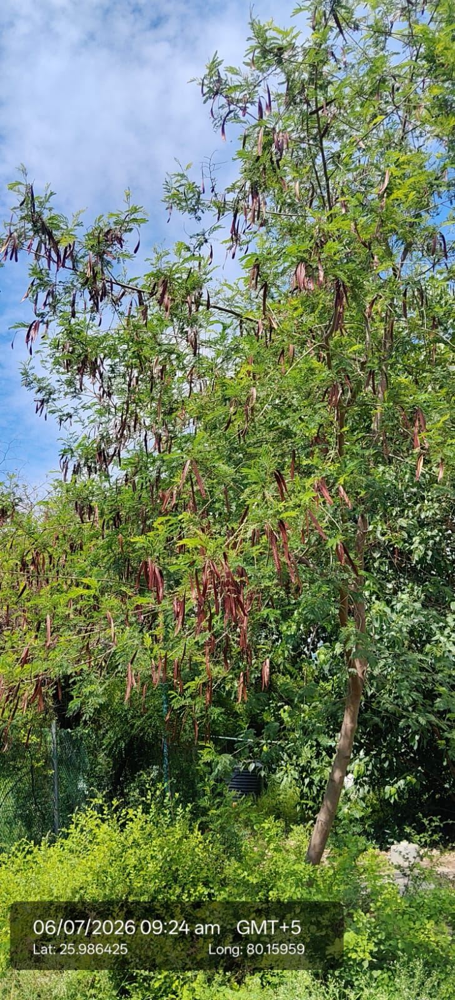

Visual record05 photographs



| Scientific name | Leucaena leucocephala |
|---|---|
| Family | Fabaceae / Leguminosae |
| Category | Trees |
Habitat & Growing Conditions
- Native to Central America and Mexico. Now widely naturalized in India
- Very common in UP including Kanpur area in your coordinates. Found on roadsides, wastelands, field bunds, and planted in plantations
- Thrives in tropical to subtropical climate. Highly drought tolerant
- Grows in poor, dry, and even saline/alkaline soils. Fixes nitrogen in soil
- Fast-growing deciduous tree, 3-10 m tall. Has feathery, bipinnate leaves and long, flat, brown pods hanging in clusters like in your photo
Economic Importance
- Fodder: Most important "fodder tree". Leaves and pods are rich in protein and fed to cattle, goats, and sheep
- Fuel & Timber: Excellent firewood and charcoal. Wood used for poles, furniture, and paper pulp
- Soil improvement: Nitrogen-fixing tree. Used for wasteland reclamation, soil conservation, and as a green manure
- Grows very fast on degraded land. Provides shade and improves soil fertility
Medicinal Importance
Medicinal notes pending.
Field Notes
- Young pods and seeds eaten as vegetable in some regions. Bark used for tanning. Planted for shade and windbreaks